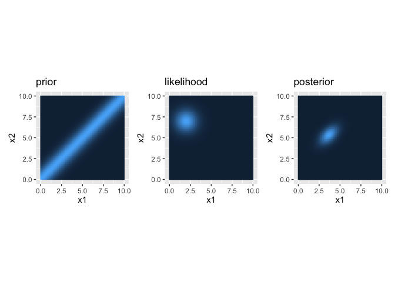

The rabBITS package provides an R-based implementation of Bayesian models for spatio-temporal perceptual integration, with the main purpose of explaining tactile perceptual illusions, including the tau effect, the kappa effect, and the cutaneous rabbit effect. The code has been developed based on the research by Dr. Daniel Goldreich, as documented in these articles:
- Goldreich, D. (2007). A Bayesian Perceptual Model Replicates the Cutaneous Rabbit and Other Tactile Spatiotemporal Illusions. PLoS ONE, 2(3), e333. https://doi.org/10.1371/journal.pone.0000333
- Goldreich, D., & Tong, J. (2013). Prediction, Postdiction, and Perceptual Length Contraction: A Bayesian Low-Speed Prior Captures the Cutaneous Rabbit and Related Illusions. Frontiers in Psychology, 4. https://doi.org/10.3389/fpsyg.2013.00221
- Martel, M., Fuchs, X., Trojan, J., Gockel, V., Habets, B., & Heed, T. (2022). Illusory tactile movement crosses arms and legs and is coded in external space. Cortex, 149, 202–225. https://doi.org/10.1016/j.cortex.2022.01.014
The aim is to implement R code and replicate selected analyses and figures from the articles to improve the accessibility and applicability of the models for data analysis in the open source R programming language.
Installation
You can install the development version of rabBITS from GitHub with:
# install.packages("devtools")
devtools::install_github("xaverfuchs/rabBITS")Example case
Let’s assume two touch stimuli are presented on the skin. The first tap in one position, and the second tap 5 cm further away from that, in position 2. We refer to these parameters as x1m and x2m and will use values of 2 and 7 cm, respecively. Let’s also assume the speed is fast, because there are only 100 ms (0.1 s) passing between them, which is the parameter time_t.
The perception on the skin also has a certain precision, which is defined by the (inverse) precision given by the spatial standard deviation sigma_s. Finally, the model assumes a relatively low movement speed, which is given by the slow speed prior, defined as sigma_v.
The package allows to easily compute the prior, likelihood, and posterior distributions for visualization and inference.
Example case
Let’s assume two touch stimuli are presented on the skin. The first tap in one position, and the second tap 5 cm further away from that, in position 2. We refer to these parameters as x1m and x2m and will use values of 2 and 7 cm, respecively. Let’s also assume the speed is fast, because there are only 100 ms (0.1 s) passing between them, which is the parameter time_t
The perception on the skin also has a certain precision, which is defined by the (inverse) precision given by the spatial standard deviation sigma_s, here 1 cm. Finally, the model assumes a relatively low movement speed, which is given by the slow speed prior, defined as sigma_v, here 10 cms/s.
The package allows to easily compute the prior, likelihood, and posterior distributions for visualization and inference.
Plots of prior, likelihood, and posterior
library(rabBITS)
library(ggplot2)
library(patchwork)
### XXX Compute prior density
x1_range <- c(0, 10) #range for taps
x2_range <- c(0, 10)
x1_res <- 100 #resolution for graphs
x2_res <- 100
priorMat <- expand.grid(x1=seq(x1_range[1], x1_range[2], length.out = x1_res), x2=seq(x2_range[1], x2_range[2], length.out = x2_res))
priorMat$p <- prior_2Tap(x1 = priorMat$x1, x2 = priorMat$x2, sigma_v = 10, time_t = 0.1)
p1 <- ggplot(priorMat, aes(x=x1, y=x2, fill=p)) +
geom_raster() +
coord_fixed() +
ggtitle("prior") +
theme(legend.position = "none")
### XXX Compute likelihood
x1m_range <- c(0, 10) #range for taps
x2m_range <- c(0, 10)
x1m_res <- 100 #resolution for graphs
x2m_res <- 100
likelihoodMat <- expand.grid(x1m=seq(x1m_range[1], x1m_range[2], length.out = x1m_res), x2m=seq(x2m_range[1], x2m_range[2], length.out = x2m_res))
likelihoodMat$l <- likelihood_2Tap_EqVar(x1m = likelihoodMat$x1m, x2m = likelihoodMat$x2m, x1=2, x2=7, sigma_s = 1)
p2 <- ggplot(likelihoodMat, aes(x=x1m, y=x2m, fill=l)) +
geom_raster() +
coord_fixed() +
ggtitle("likelihood") +
theme(legend.position = "none")
### XXX Compute posterior density
posteriorMat <- expand.grid(x1=seq(x1_range[1], x1_range[2], length.out = x1_res), x2=seq(x2_range[1], x2_range[2], length.out = x2_res))
posteriorMat$p <- posterior_2Tap_EqVar(x1m = 2, x2m = 7, x1 = posteriorMat$x1, x2 = posteriorMat$x2, sigma_s = 1, sigma_v = 10, time_t = 0.1)
p3 <- ggplot(posteriorMat, aes(x=x1, y=x2, fill=p)) +
geom_raster() +
coord_fixed() +
ggtitle("posterior") +
theme(legend.position = "none")
# join plots
p1 + p2 + p3
Parameters of the posterior distribution
According to Bayesian perception models, the posterior corresponds to perception. That is, the a position that is perceived can be computed by a maximum posterior estimate, such as the mode of the posterior distribution.
The parameters of the posterior distribution can easily be computed, as shown in this example. x1_star and x2_star are the posterior modes for tap 1 and 2, respectively.
posterior_params_2Tap_EqVar(x1m = 2, x2m = 7, time_t = 0.1, sigma_s = 1, sigma_v = 10)
#> $x1_star
#> [1] 3.666667
#>
#> $x2_star
#> [1] 5.333333
#>
#> $common_sigma_square
#> [1] 0.6666667
#>
#> $correlation
#> [1] 0.5